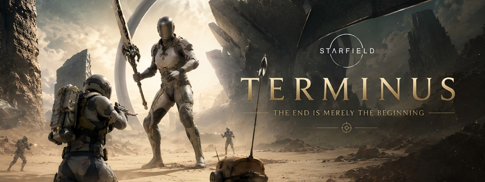
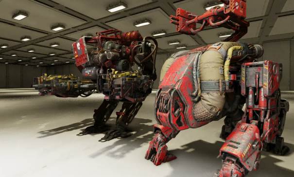
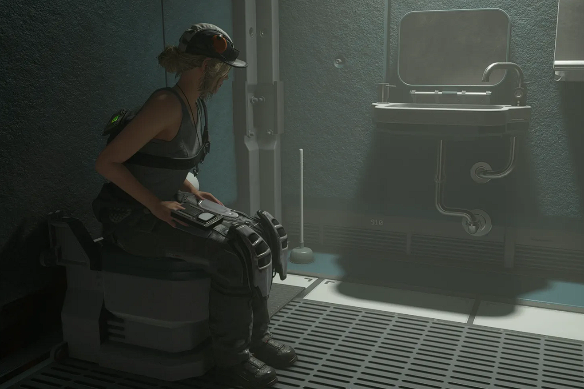
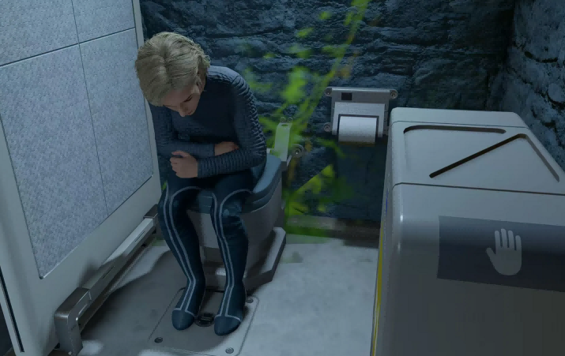
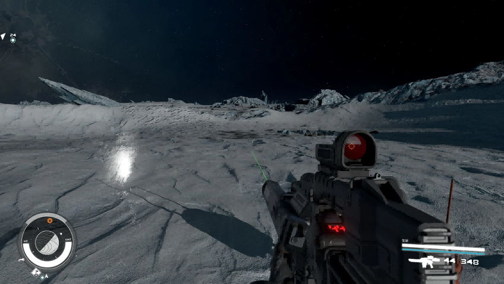
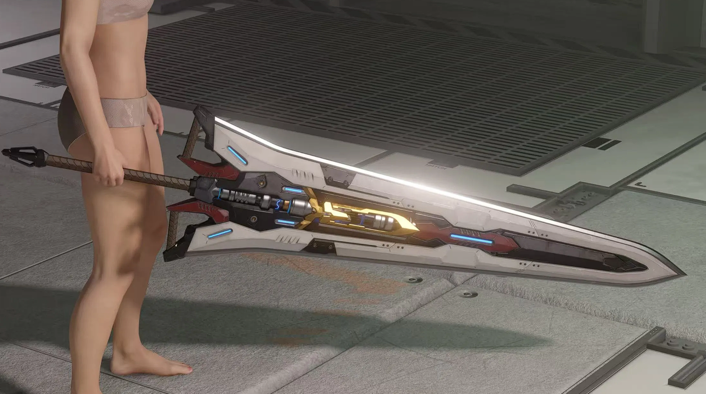
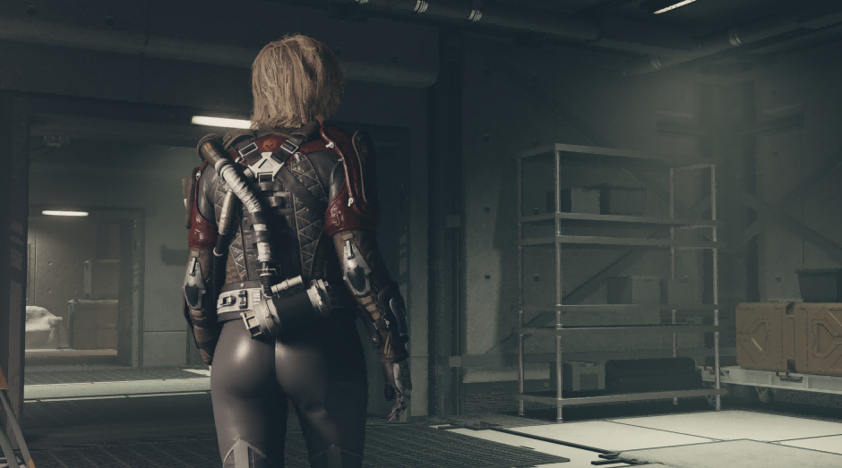
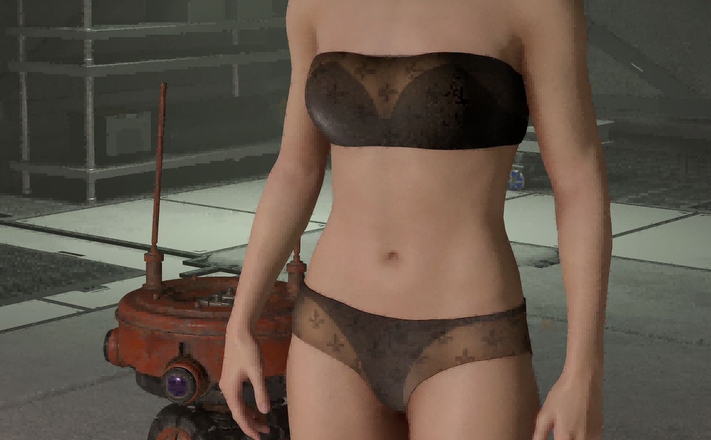

Starfield gameplay systems, immersive world interaction,
NASA-punk equipment design and Bethesda-style mod development.
10K+
Total Downloads
100+
Community Likes
25+
Published Mods
PC·Xbox·PS5
All Platform Support
FEATURED STARFIELD MOD

THE TERMINUS
Starborn Sword · Custom Dungeon · Boss Fight
A handcrafted Starfield experience centered around an ancient
Starborn relic hidden beneath forgotten ruins.
Explore a mysterious underground location, uncover environmental
storytelling and face a powerful Starborn boss guarding
TERMINUS — a legendary blade tied to the Unity itself.
Quest Experience
Boss Fight
Dungeon
Starborn Lore
Custom Weapon
480 Downloads
10 Likes
Gameplay Systems
Immersive gameplay mechanics, world interaction systems
and Bethesda-style environmental simulation.

GAMEPLAY EXPANSION
Crimson Fleet Combat Drone Grenade
Deploy autonomous Crimson Fleet combat drones through specialized grenades,
creating immersive faction-based combat support systems.
AI Systems
Combat
Gameplay
Lore Friendly
3,449 Downloads
21 Likes

WORLD IMMERSION
You Can Sit On Toilets
Adds fully interactive sitting functionality to toilets across the Starfield universe.
Immersion
World Interaction
Gameplay
2,331 Downloads
31 Likes

IMMERSIVE SYSTEM
YOU NEED POOP
A complete biological immersion system expanding realism and environmental simulation.
Immersion
Simulation
Gameplay
1,125 Downloads
9 Likes
Weapons & Equipment
Industrial sci-fi weapons, immersive combat visuals
and NASA-punk equipment design.

IMMERSIVE VISUALS
Realistic Helmet Vision
Enhanced first-person helmet visuals with realistic reflections and sci-fi overlays.
HUD
Visual FX
UI
74 Downloads
2 Likes

WEAPON DESIGN
Nova Cleaver
Industrial-style melee weapon inspired by Starfield’s NASA-punk visual identity.
Weapon
3D Modeling
PBR
145 Downloads
6 Likes
Characters & Outfits
Character customization, outfit design
and sci-fi material workflows.

OUTFIT DESIGN
Pirate Outfit
A lore-friendly pirate outfit designed with industrial sci-fi materials and NASA-punk details.
3D Modeling
PBR Materials
Outfits
1,564 Downloads
12 Likes

CHARACTER CUSTOMIZATION
Black Lingerie
Stylish sci-fi inspired black outfit focused on realism and character customization.
Character
Textures
Customization
710 Downloads
9 Likes
About TownGG
UI designer and Starfield mod creator focused on immersive NASA-punk gameplay systems,
industrial sci-fi aesthetics and Bethesda-style world interaction.
Experienced in gameplay integration, visual design, PBR material workflows,
environmental immersion and interactive UI production.
Passionate about creating believable sci-fi experiences that feel naturally integrated
into the Starfield universe.
Production Workflow
From gameplay concepts to in-game implementation,
combining gameplay system design, UI iteration and Bethesda Creation Kit integration.
01
Concept Design
Gameplay ideas, immersion direction and visual planning.
02
Asset Creation
Modeling, texturing and NASA-punk material development.
03
Integration
Gameplay systems, UI implementation and Creation Kit setup.
04
Testing
Optimization, balancing and Xbox compatibility testing.
Creation Kit
Blender
Photoshop
Substance Painter
xEdit
NifSkope
PBR Workflow
UI/UX Design
Contact & Social
Follow my projects, Starfield creations and future updates.